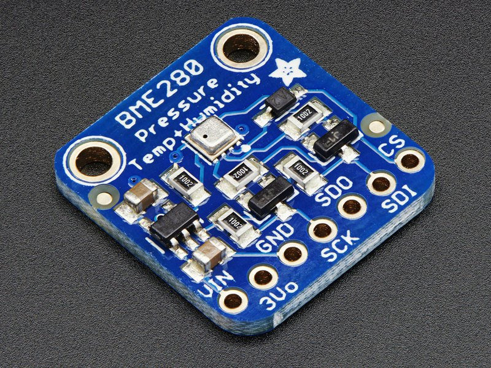
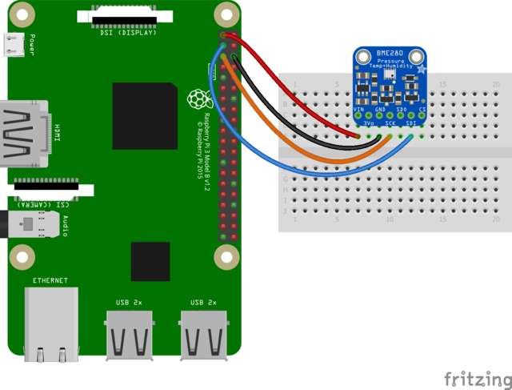
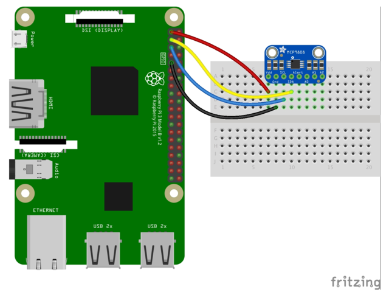

For this project, we'll be using two temperature sensors. The Adafruit MCP9808 Precision I2C Temperature Sensor and the Adafruit BME280 I2C Humidity, Barometric Pressure, and Temperature. These both use the I2C bus and require only 4 GPIO pins. They can be connected in parallel, as they will be referenced by two different addresses.

Pi 3V3 (Pin 1) Pi GND (Pin 5) Pi SCL (Pin 2) Pi SDA (Pin 3)
 
I'll be relying on the Adafruit CircuitPython libraries.
https://github.com/adafruit/Adafruit_CircuitPython_MCP9808
https://github.com/adafruit/Adafruit_CircuitPython_BME280
# download the latest iamge
wget http://downloads.raspberrypi.org/raspbian_lite/images/raspbian_lite-2018-06-29/2018-06-27-raspbian-stretch-lite.zip
# find the sdcard device
sudo fdisk -l
# DD (with progress) the raspbian image to the sd card.
sudo dcfldd bs=4M if=2018-06-27-raspbian-jessie.img of=/dev/mmcblk0
# mount the first partition and enable ssh
mount /dev/mmcblk0 /mount/sd
touch /mount/sd/ssh
umount /mount/sd
# mount the second partition and edit the wireless config
mount /dev/mmcblk1 /mount/sd
# edit the wireless config
sudo vim /mount/sd/etc/wpa_supplicant/wpa_supplicant.conf
network={
ssid="MyWiFiName"
psk="MyWiFiPassword"
proto=RSN
key_mgmt=WPA-PSK
pairwise=CCMP
auth_alg=OPEN
}
# unmount the partition
umount /mount/sd
Place the sd card in the pi, apply the power.
# Search for the pi on the network.
$ nmap -sP 192.168.1.0/24 | grep pi
Nmap scan report for raspberrypi.local (192.168.1.123)
# ssh to the pi with the default password 'raspberry'
ssh pi@192.168.1.123
# use rasp-config to do the following
# 1. Change the pi user password
# 2. Turn off GUI
# 3. Expand the main partition.
# reboot
sudo reboot
sudo apt-get update
sudo apt-get upgrade
sudo apt-get install python-smbus i2c-tools
sudo pip3 install RPI.GPIO
sudo pip3 install adafruit-circuitpython-bme280
sudo pip3 install adafruit-circuitpython-mcp9808